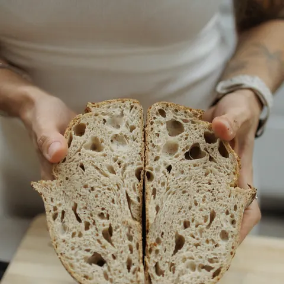
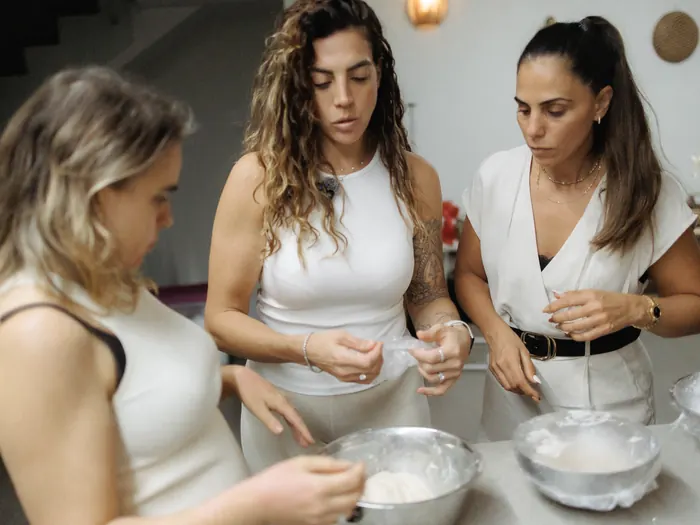
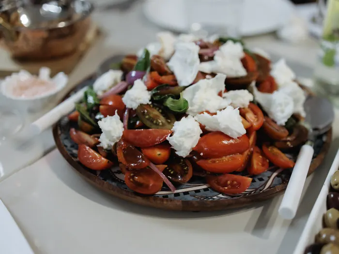
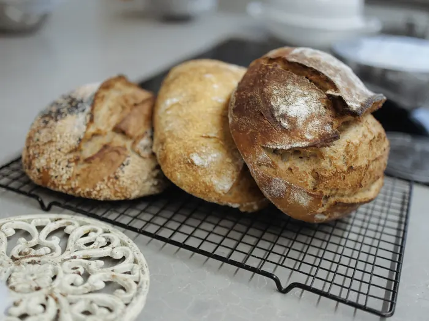
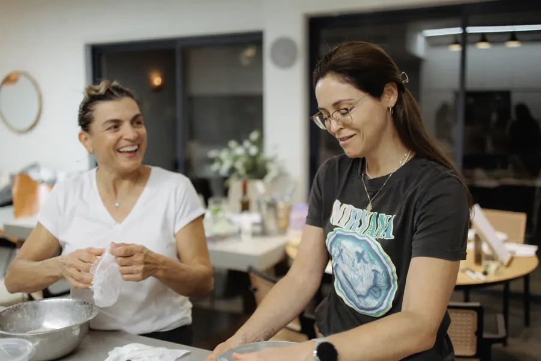
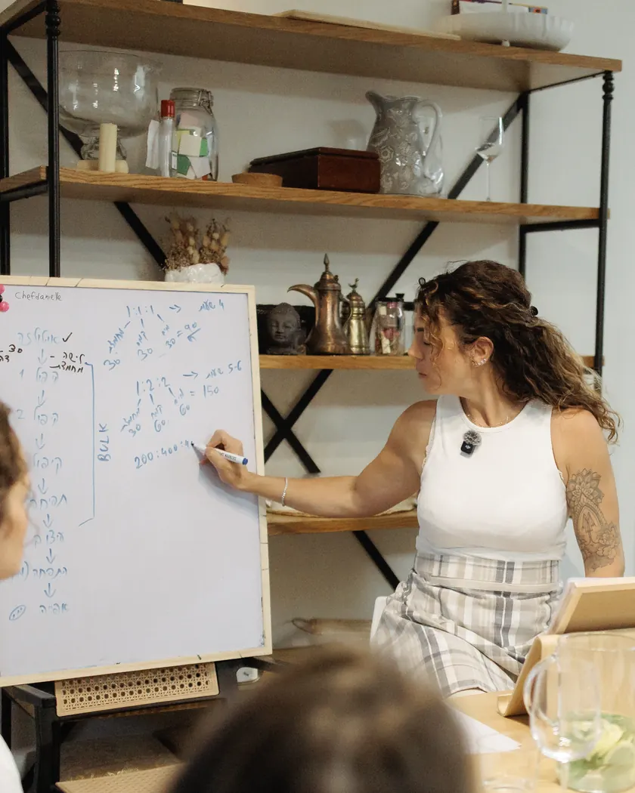
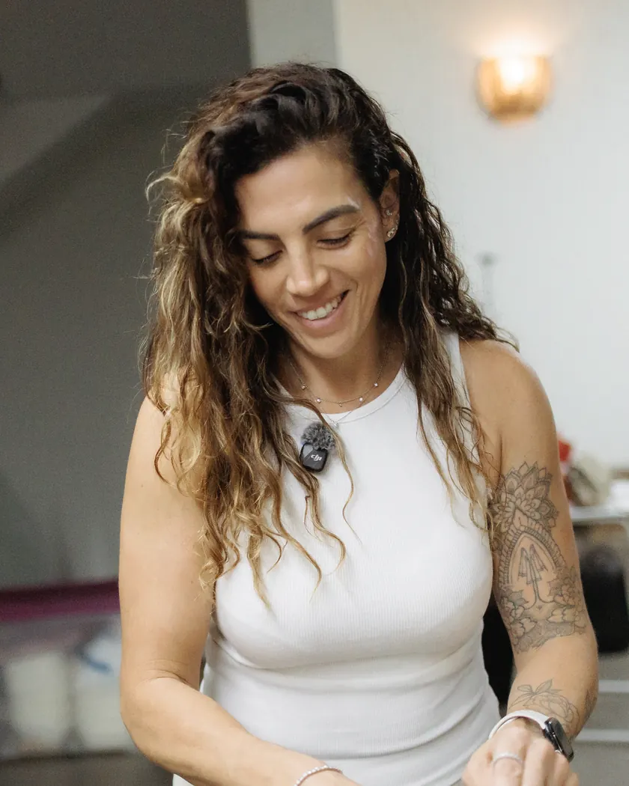
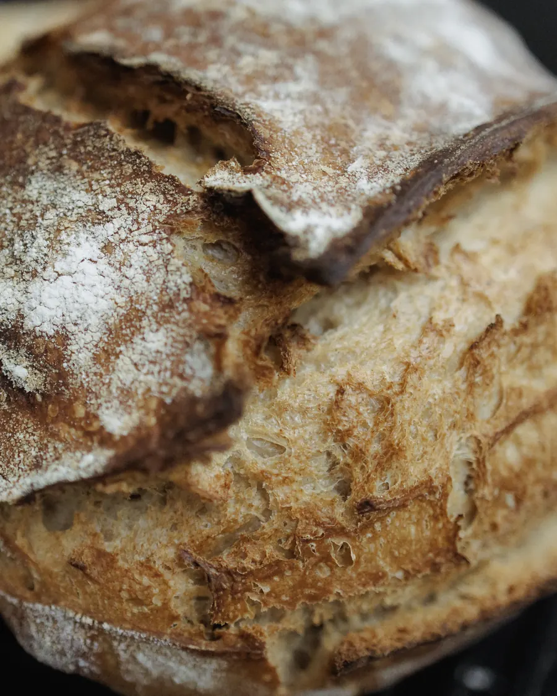

תמיסדנת 22/10
דניאל יקירה, תודה ענקית על סדנה מושלמת מכל הבחינות. מאחלת לך המון בהצלחה, אני לגמרי הולכת להמליץ עלייך ❤️
סדנת לחמי מחמצת באבן יהודה
בסדנה שלי תלמדי להכין לחם מחמצת אמיתי בבית, מהיכרות עם המחמצת ועד כיכר שתכיני במו ידייך. חוויה מרגיעה באווירה ביתית, עם בראנץ׳, יין וקינוח. ותצאי עם כיכר, מחמצת, ידע וביטחון להמשיך לאפות בעצמך.

מה ששלחו לי משתתפות מהסדנאות האחרונות, במילים שלהן.
החליקי לעוד סרטונים
אחרי כל כך הרבה ניסיונות כושלים... איך פתאום הדבר נראה פשוט ומענג.
יצאתי מהסדנה עם כלים וביטחון שהיו חסרים לי, להכין ולסמוך על עצמי בתהליך.
כשהגעתי לבית אפיתי את הלחם שהכנו בסדנה, ויצא טעים כל כך! כל המשפחה נהנתה.
מה שהכי אהבתי זה שהליווי לא מסתיים בסוף הסדנה.
ומקבוצות הוואטסאפ של הסדנאות, באותו הערב
דניאל יקירה, תודה ענקית על סדנה מושלמת מכל הבחינות. מאחלת לך המון בהצלחה, אני לגמרי הולכת להמליץ עלייך ❤️
אני מצטרפת לתודות. השפע והסבלנות שבהם לימדת, והיה ניכר שחשוב לך שנבין ונצליח! באמת מלכה ומהממת!!
דניאלי תודה רבה לך, למדתי כל כך הרבה. הכל היה מושלם וטעים וברור ומחכים. איזה כיף היה לפגוש את כולן ❤️❤️
דניאל את מהממת. האירוח היה 10/10, ממש הורגשה ההשקעה, האכפתיות והרצון הטוב. תודה על הכל ❤️
דניאל את מלכה 👸 היה מושלם!! מלמד ומקצועי. וטעים 😋
היה מקסים. תודה רבה על ההשקעה והמקצועיות. סדנה מושקעת, מלמדת, ושמחתי להכיר את כולן ❤️
תודה על נתינה מהלב. היה אחה״צ מלמד, מהנה, טעים!! תודה שאפשרת לנו ללמוד.
וואו דניאל, איך נהניתי מהכל! תודה רבה על הנתינה שלך, על שחלקת איתנו את הידע ואירחת אותנו בביתך המושלם 🧿
החליקי לעוד הודעות



רוצה להצטרף לסדנה הקרובה?
הרשמה לסדנהארבע שעות בבית שלי באבן יהודה: תלמדי, תנסי בידיים, תטעמי ותשאלי כל מה שתמיד רצית לדעת על מחמצת.
ומעבר ללמידה, אפיית לחם היא גם חוויה מרגיעה ומרפאת, מעין ריפוי בעיסוק שמאפשר לעצור לרגע, להתנתק מהשגרה, ליצור וליהנות מהתהליך. כל זה באווירה ביתית ונעימה, עם אירוח מפנק: ארוחת בראנץ׳, יין, טעימות של לחמי מחמצת וקינוח.


בסוף הסדנה תדעי להכין לחם מחמצת בעצמך, ותדעי בדיוק מה נכנס לתוכו: קמח, מים ומלח. בלי חומרים משמרים, בלי שמרים תעשייתיים, ובלי לנחש.
מעשית ותיאורטית, צעד אחר צעד, מהמחמצת ועד הכיכר.
מהי מחמצת, איך היא עובדת, איך מתחזקים אותה ואיך יודעים מתי היא מוכנה לאפייה.

היכרות עם חומרי הגלם, הכנת בצק מחמצת והבנת התהליך שמאחורי הלחם.

תלמדי איך ומתי מקפלים, מה קורה לבצק לאורך הזמן ואיך מזהים שהוא מתקדם כמו שצריך.

נהנות מבראנץ׳ מפנק, לחמי מחמצת, יין ומטעמים, לצד למידה ושיחה.

תלמדי איך לעצב כיכר, איך להתפיח נכון ומה חשוב לדעת לפני האפייה.

נדבר על שיטות אפייה בבית, טמפרטורות, זמני אפייה ואחסון.

תצאי עם כיכר לחם שהכנת בעצמך לאפייה בבית, עם גור מחמצת להמשך הדרך ועם חוברת הדרכה שתלווה אותך גם במטבח. ובמתנה: שקית לחם של ״קמח הארץ״.

הליווי לא נגמר כשיוצאות מהדלת. בקבוצת הוואטסאפ של הסדנה ממשיכות לשאול, משתפות תמונות של הלחמים הראשונים ולומדות אחת מהשנייה.
חן, בערב של הסדנהעכשיו רק מגיעה הביתה... הבצק פה ממש תפח. להכניס אותו למקרר ואז להעביר לתבנית?
דניאלאם בא לך, אז כן. תני לו קצת קירור, כדי שיהיה לך יותר קל.
לחם מחמצת הוא לא רק טרנד, ולא רק לחם עם טעם ומרקם מיוחדים. מאחורי ההכנה שלו מסתתר תהליך ביולוגי מעניין, שיכול להעניק לו כמה יתרונות תזונתיים.

ההתססה עשויה להפחית את כמות החומצה הפיטית שבקמח, וכך לשפר את הזמינות של מינרלים כמו ברזל, אבץ ומגנזיום לספיגה.
בשפה המדעית: החומציות שהמחמצת יוצרת מעוררת את הפיטאז, אנזים טבעי שנמצא בקמח ומפרק את החומצה הפיטית.
במהלך ההתססה, חיידקי חומצת החלב והשמרים מפרקים חלק מהרכיבים בבצק, כולל חלק מהפחמימות והחלבונים. אצל חלק מהאנשים זה עשוי לשפר את תחושת העיכול.
בשפה המדעית: התססה ארוכה מפרקת חלק מהפרוקטנים, פחמימות מקבוצת ה-FODMAP שקשות לעיכול אצל חלק מהאנשים.
בחלק מסוגי לחמי המחמצת נצפתה תגובה גליקמית מתונה יותר בהשוואה ללחמים אחרים. זה תלוי בסוג הקמח, בהרכב הלחם ובמשך ההתססה.
בשפה המדעית: החומצה הלקטית והחומצה האצטית שנוצרות בהתססה מאטות את קצב פירוק העמילן ואת ספיגת הסוכר.
אפשר להכין לחם מחמצת נהדר מארבעה רכיבים פשוטים: קמח, מים, מלח ומחמצת. בלי משפרי אפייה ובלי חומרים משמרים.
בשפה המדעית: החומציות הטבעית של הלחם מאטה את ההתעפשות ועוזרת לו להישאר טרי יותר זמן, בלי תוספים.
במקום להסתמך רק על שמרי אפייה מסחריים, נותנים לשמרי הבר ולחיידקי חומצת החלב שבמחמצת לעבוד, להתפתח ולהתסיס את הבצק בקצב שלהם.
בשפה המדעית: כך אפו לחם במשך אלפי שנים, הרבה לפני ששמרי האפייה התעשייתיים נכנסו לשימוש במאה ה-19.
והכי חשוב: לא כל לחם מחמצת הוא אוטומטית לחם בריא יותר. גם לסוג הקמח, לאיכות חומרי הגלם ולהרכב הלחם יש משמעות. וחשוב לדעת: לחם מחמצת מקמח חיטה, כוסמין או שיפון מכיל גלוטן, ולכן אינו מתאים לחולי צליאק.
אני בעד לחזור לפשטות: חומרי גלם טובים, תהליכים טבעיים ואוכל אמיתי.דניאל
המושגים שיתחילו להיות לך מוכרים מאוד.

נעים להכיר, אני דניאל
בוגרת לימודי רפואה תזונתית, מאמנת נשים ומשפחות להפוך את המטבח ואת התזונה לבריאים יותר, ומנחה סדנאות לחמי מחמצת.
כשאני מכינה לחם, אני נכנסת לעולם משלי. הידיים עסוקות, הראש מתפנה, והמחשבות על כל מה שמחכה לי בהמשך היום פשוט נדחקות הצידה.
יש משהו כמעט מדיטטיבי בהכנת לחם מחמצת: לגעת בבצק, להרגיש את המרקם משתנה, לקפל, להמתין, להתבונן בתפיחה. אין באמת אפשרות למהר. צריך להיות נוכחת, להקשיב לתהליך ולתת לדברים לקרות בקצב שלהם.
בשבילי, הכנת לחם היא הרבה מעבר להכנת מזון. היא זמן לעצמי, חיבור לידיים, לחומר ולטבע, וסוג של שקט שקשה למצוא במקומות אחרים. ואת התחושה הזאת אני רוצה להעביר גם לך.
כי בסופו של דבר, יוצאות מהסדנה לא רק עם כיכר לחם וידע חדש, אלא גם עם חוויה של יצירה, נוכחות והנאה מהדרך.
דניאל
ממש לא. מתחילות מהבסיס, ממה זו בכלל מחמצת ואיך עובדים איתה. הסדנה מתאימה גם אם מעולם לא אפית לחם, וגם אם כבר ניסית לבד ונתקעת.
כיכר לחם שהכנת בעצמך, מוכנה לאפייה בתנור הביתי, גור מחמצת להמשך הדרך וחוברת הדרכה מפורטת שעושה סדר בכל השלבים. ובמתנה: שקית לחם של ״קמח הארץ״, חברה שאני מאמינה בה ועובדת עם הקמחים שלה.
כן. אני מרכיבה ערכת אפייה שאפשר יהיה לרכוש אצלי, במחיר משתלם יותר מאשר לקנות כל מוצר בנפרד.
ממשיכות יחד. בקבוצת הוואטסאפ של הסדנה אני זמינה לשאלות ולתמיכה, ומשתפות בה תמונות של הלחמים והמחמצות, כדי שכולן ילמדו מכולן.
בטח! הרבה מגיעות בזוגות: עם חברה, עם אחות, לחגוג משהו או סתם את החיים. והסדנה פתוחה גם לגברים.
ועוד איך. באמצע הסדנה יש ארוחת בראנץ׳ מפנקת שאני מכינה, עם יין, טעימות של לחמי מחמצת וקינוח.
הסדנאות מתקיימות בבית שלי באבן יהודה, עם עד 10 משתתפות בכל סדנה. התאריכים הקרובים והמחיר מחכים לך בדף ההרשמה, ושם גם שומרים מקום. יש לך שאלה? שלחי לי הודעה בוואטסאפ.

בחרי מועד ושמרי לך מקום. נתראה סביב השולחן.
הרשמה לסדנהשאלות? בוואטסאפ או בטלפון: 054-757-5775